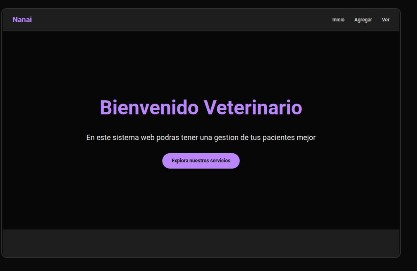

Sistema de Gestión Veterinaria
React
Next.js
PostgreSQL
Prisma ORM
Bcrypt
TypeScript
Tailwind CSS
Vercel
Descripción Técnica
Diseñé e implementé una solución integral para la administración de clínicas veterinarias, enfocada en la digitalización de expedientes y la optimización de procesos internos.
Funcionalidades Implementadas
- Expedientes Médicos: Gestión dinámica de historias clínicas, vacunas en PostgreSQL.
- Seguridad de Datos: Implementación de Bcrypt para el hash de contraseñas, garantizando que el acceso administrativo sea seguro y privado.
- Arquitectura Moderna: Uso de Next.js para optimizar el rendimiento y Prisma como ORM para un manejo de datos seguro y tipado.
- Interfaz Responsiva: Diseño adaptativo pensado para su uso tanto en computadoras de escritorio como en tablets dentro del consultorio.
